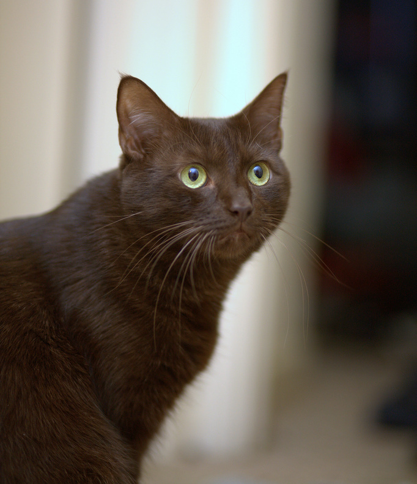

The Havana Brown was the result of a planned breeding between Siamese and domestic black cats,[1] by a group of cat fanciers in England, in the 1950s. Early breeders introduced a Siamese type Russian Blue into their breeding, however using current genetic testing, it is believed that almost none remain in the gene pool.
It has been documented that self-brown cats were shown in Europe in the 1890s, one name given to these was the Swiss Mountain Cat. These disappeared until post-World War II, with the most likely explanation that the Siamese Cat Club of Britain discouraging their breeding.[2] The Swiss Mountain Cat was never used in the breeding programs of the modern Havana Brown, however they likely share genetics inherited from the Siamese.
References
This article uses material from the Wikipedia article "Havana Brown", which is released under the Creative Commons Attribution-Share-Alike License 3.0.
1. Breed Profile: The Havana Brown
Picture: By Dave Scelfo from Point Pleasant Beach, NJ, USA (choco) [CC BY-SA 2.0], via Wikimedia Commons
{kind=link}